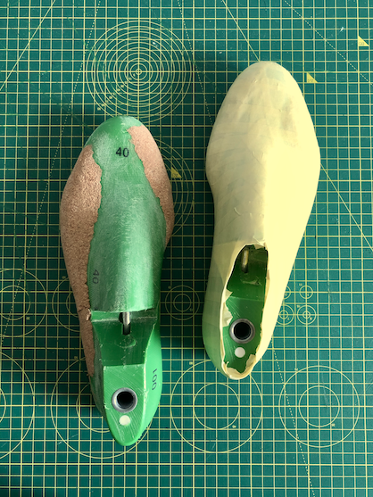
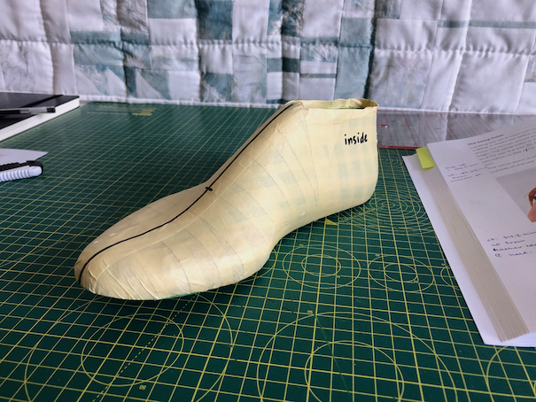
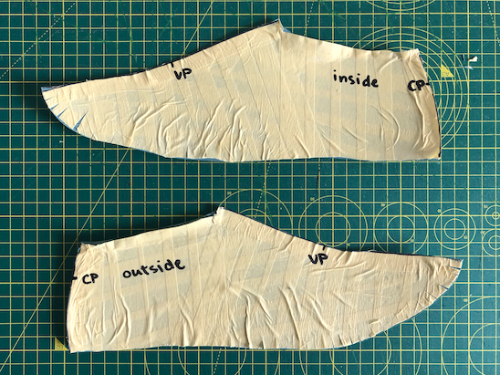
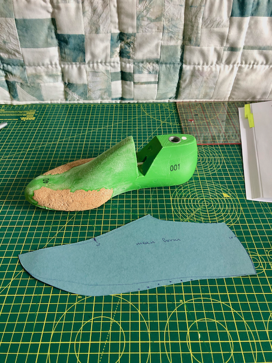
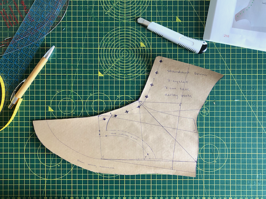
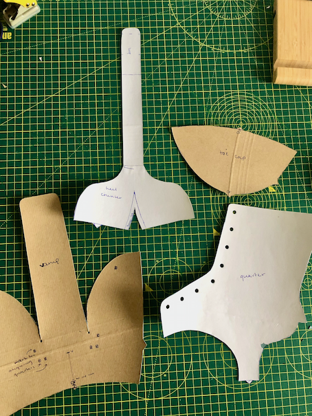

In a series of posts, I’m going to share my process for crafting a pair of handsewn, hand-welted leather derby boots.
I’m absolutely not a shoemaking expert. I’m fully self-taught, and my process is a weird melange of professional bespoke techniques and idiosyncratic hacks. But I’ve been wearing the first pair of hand-welted derby boots I made every day for nearly a year, and they’re holding up really well. So whatever I’m doing is good enough for me!
To create my new derby boot pattern, I’m mostly following instructions from the book Handcraft Your Own Shoes and Boots by Neda Hussain. I’ve noted other useful references and sources for shoemaking materials at the bottom of the post.
The process
- Cover the last (that is, the foot form) in masking tape and mark essential points.
- Cut the tape off the last and stick each side flat onto paper to create the inside and outside forms.
- Average out any wobbly bits to create the mean form.
- Add on design lines to create the standard form.
- Using the standard form, create pattern pieces.
1. Taping the last
Overall, what I’m doing here is moving from the 3D shape of a last down to a 2D representation. Covering the last in masking tape, then cutting the tape off and sticking it down flat onto some card, gives me a decent approximation of the curves and contours of the foot.

(I’ve built up my lasts using cork so that the shoes will actually be as wide as my feet are.)

I marked the centre lines down the front and heel, as well as the “vamp point”: the widest point of the last measured from the ball of the foot across to the pinky knuckle. This is also the point where the “quarters” end and the “vamp” begins. The “quarters” are the pieces on each side of the foot and ankle that meet the strap at the centre back and hold all the eyelets for the laces on either side of the front. The “vamp” is the piece that joins the toe cap in the front, curves around the sides of the foot to lie below the quarters, and extends upwards between the quarters to make the tongue.
2. Getting the inside and outside forms
I also marked the “counter point” CP on the heel, sliced the tape along those two centre lines, and stuck each half down onto card and cut them out.

Getting the tape approximately flat is good enough for most of the foot—those wrinkles aren’t the end of the world. But small slices around the outside edge are essential to help the toe lie down smoothly.
3. Finding the mean form
The mean form is so called because it’s the mean, i.e., average, of the inside and outside forms.

I overlaid the inside and outside forms on another piece of card and traced around each of them. Then I marked the line that falls in between each of those outlines and cut along it (except for the bottom front of the foot—there I kept the full width of the outside form).
I only need to do all this once. Now that I have the mean form, I can use it as the basis for every pair of shoes I design for this last from now on.
4. Creating the standard form
Here’s where things get design-specific and the shape of the derby boot starts to emerge!
This step involves tracing the mean form onto another piece of paper, marking a bunch of points in particular locations, and drawing a bunch of lines between them at specific angles and with specific lengths. I leaned heavily on the Hussain book here!

One place I diverged from the Hussain book: that book is written for making shoes using the stitch-down construction (i.e., the upper of the shoe is sewn directly onto the midsole), a construction that’s easier to sew but a lot harder to resole. I’m going to hand-welt my shoes instead (see this Shoegazing post on different construction methods). Hand-welting requires the lasting allowance around the bottom edge to be a lot more generous than stitch-down requires its seam allowance to be. I used 25 mm total.
5. Getting the pattern pieces
Finally, I followed the Hussain book to derive from the standard form the four pattern pieces I’ll cut from my leather:
- The heel counter with back strap (top left).
- The toe cap (top right).
- The quarters (bottom right).
- The vamp (bottom left).

For easier tracing, I glued the paper pieces onto card (sourced from a recycled folder, hence the funny ridges!).
That’s all for now :)
Shoemaking references
I’ve learned a lot about handmade/bespoke leather shoes from information freely available online.
As a beginner making cemented (i.e., sole-glued-on) shoes, I got a lot of inspiration from:
As I got more skilled and wanted to learn about hand-welted shoes, I dove deep into:
Where I get shoemaking supplies (in the UK)
- I get my leather from Leather4Craft (get vegetable tanned, not chrome tanned, if you can!).
- The Carreducker shop has a lot of great supplies, including pretty niche tools that are hard to find elsewhere.
- My lasts are from I Can Make Shoes, but lasts can also be found more affordably on platforms like Etsy.
- As a last (ha) resort: Amazon.